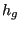
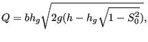
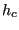
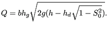
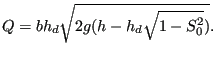

Next: Weir Up: Fluid Section Types: Open Previous: Straight Channel Contents
The sluice gate is the upstream element of a channel and is
illustrated in Figure 121. The element downstream of a sluice
gate should be a straight channel element. The interesting point is that the gate
height 
If the gate door touches the water and the water curve is a frontwater curve
(curve A in Figure 121) the volumetric flow  is given by
(assuming
is given by
(assuming  )
)
 |
(193) |
if the gate door does not touch the water and the water curve is a frontwater curve
the volumetric flow  is given by
is given by
where  is maximal. For a rectangular cross secton
is maximal. For a rectangular cross secton
 . If the gate door touches the water and the water curve is a backwater curve
(governed by downstream boundary conditions, curve B in Figure 121)) the volumetric flow is given by
. If the gate door touches the water and the water curve is a backwater curve
(governed by downstream boundary conditions, curve B in Figure 121)) the volumetric flow is given by
 |
(195) |
Finally, if the gate door does not touch the water and the water curve is a backwater curve the volumetric flow is given by
 |
(196) |
The following constants have to be specified on the line beneath the *FLUID SECTION,TYPE=CHANNEL SLUICE GATE card (the width, the trapezoid angle, the slope and the grain diameter should be the same as for the downstream element immediately next to the sluice gate; they are needed for the calculation of the critical height and normal height):
Example files: channel1, chanson1.